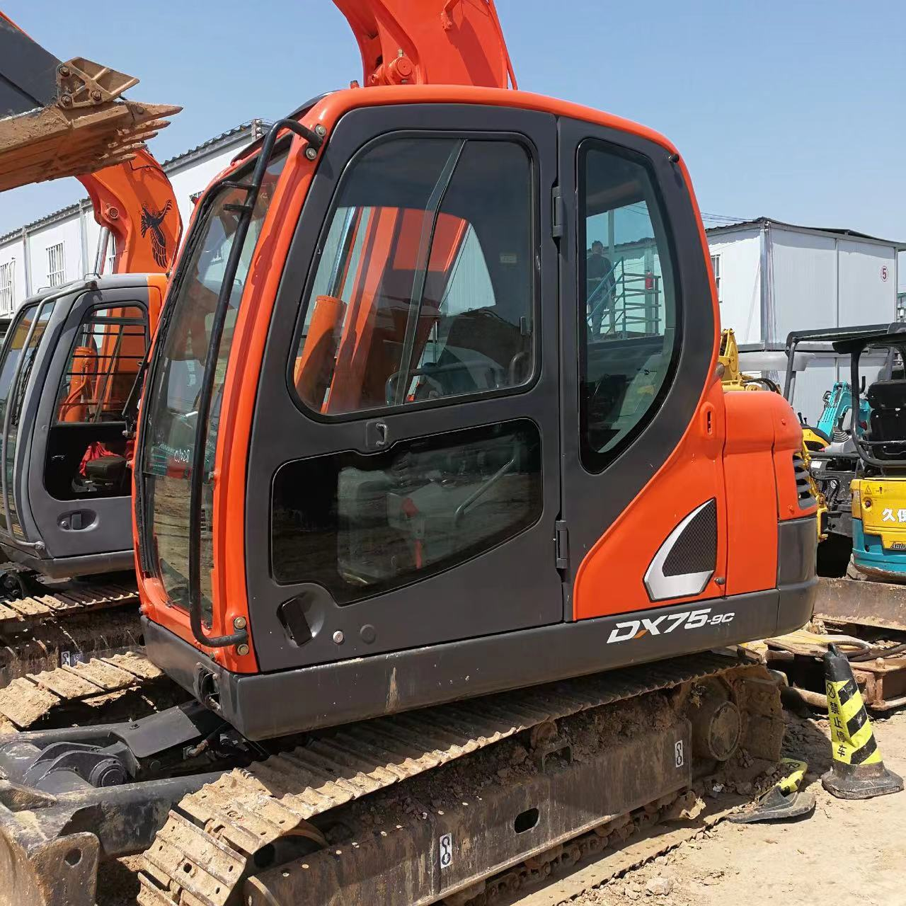

Refurbished Doosan DH75 Excavator
The Doosan DH75 Excavator is a highly regarded machine in the construction and excavation industry, offering both power and precision. This mid-sized excavator is well-suited for a variety of tasks, including digging, trenching, material handling, and site preparation. With a reputation for durability, smooth hydraulic performance, and versatility, the Doosan DH75 remains a popular choice for operators in various sectors.
Honestly, it's almost impossible to buy a brand new excavator from China. They either don't exist or are made in China. If a Chinese seller tells you their Caterpillar/Komatsu/Volvo/Kobelco/Hitachi is brand new, they're lying. Therefore, a refurbished excavator is your best bet.

Here are the detailed specifications for a refurbished Doosan DH75-7 excavator, structured for technical documentation and consistent with your annotated library:
Operating Weight and Dimensions
- Operating Weight: 7,200–7,500 kg
- Transport Length: ~6.0–6.2 meters
- Transport Width: ~2.3 meters
- Transport Height: ~2.6–2.7 meters
- Tail Swing Radius: ~1.7–1.8 meters
- Ground Clearance: ~400 mm
- Track Width: 450 mm standard
Engine and Powertrain
- Engine Model: Yanmar 4TNV98 or Doosan D24 (Tier 2 compliant)
- Rated Power Output: ~44–48 kW (59–64 hp) @ 2,200 rpm
- Maximum Torque: ~240–260 Nm
- Fuel Tank Capacity: ~130–150 liters
- Travel Speed: 2.6–5.1 km/h
- Swing Speed: ~10 rpm
- Gradeability: Up to 35°
Hydraulic System
- Main Pump Type: Variable displacement axial piston pump
- Flow Rate: ~2 × 100–110 L/min
- System Pressure: Up to 27.5 MPa
- Hydraulic Oil Capacity: ~140–160 liters
- Control System: Load-sensing with pilot-operated valves
- Boom/Arm/Bucket Priority: Configurable via control lever
Performance Metrics
- Bucket Capacity: 0.3–0.35 m³ (SAE heaped)
- Max Digging Depth: ~4.1–4.3 meters
- Max Reach (Horizontal): ~6.4–6.6 meters
- Max Dump Height: ~4.6–4.8 meters
- Bucket Digging Force: ~55–60 kN
- Arm Digging Force: ~40–45 kN
Cab and Operator Features
- Cab Type: ROPS/FOPS certified
- Display: Analog gauges or basic LCD monitor
- Controls: Pilot-operated joysticks with auxiliary hydraulic circuit
- Comfort: Adjustable seat, optional HVAC
- Visibility: Wide glass area, LED work lights
Smart Features and Efficiency
- Fuel Efficiency:
- Mechanical fuel injection
- Auto idle and engine shutdown
- Emissions Control: Tier 2 compliant (no DPF/SCR)
- Transportability: Easily trailerable under 8-ton class
Attachments Compatibility
- Standard Bucket: 0.3–0.35 m³
- Optional Tools: Hydraulic breaker, auger, compactor, ripper
- Quick Coupler: Manual or hydraulic options available
Refurbishment Scope
Refurbished DH75 units typically include:
- Engine Overhaul: Cylinder head, turbocharger, injectors, seals
- Hydraulic Restoration: Pump recalibration, valve block testing, hose replacement
- Electrical Diagnostics: Monitor, sensors, wiring harness
- Cab Reconditioning: Seat, joysticks, HVAC, repainting
- Structural Repairs: Boom/bucket welding, bushing replacement, undercarriage rebuild
Overview of the Doosan DH75 Excavator
The Doosan DH75 is part of Doosan's robust lineup of hydraulic excavators, designed for high efficiency and productivity. Whether working in construction, landscaping, or utility installation, the Doosan DH75 Excavator offers solid power, excellent hydraulic flow, and smooth performance, ensuring that operators can complete their tasks quickly and efficiently.
Key Specifications of the Doosan DH75
-
Operating Weight: Approximately 7,500 kg (16,535 lbs)
-
Engine Power: 55 kW (73 hp)
-
Max Digging Depth: Up to 4.4 meters (14.4 feet)
-
Max Reach: Approximately 6.3 meters (20.7 feet)
-
Bucket Capacity: Typically 0.3 to 0.4 cubic meters (10.6–14.1 cubic feet)
-
Fuel Tank Capacity: Around 160 liters (42.3 gallons)
-
Travel Speed: Max speed of 5.5 km/h (3.4 mph)
These specifications make the Doosan DH75 Excavator a versatile machine for medium-duty excavation jobs. Its compact size allows for efficient work in confined spaces, while its powerful engine and hydraulic system enable it to handle larger, more demanding tasks as well.
Performance and Efficiency
The Doosan DH75 is designed to deliver excellent performance, combining strong digging power with smooth, responsive hydraulic capabilities. Its 55 kW (73 hp) engine, paired with a well-engineered hydraulic system, ensures that the machine can perform tasks such as trenching, digging, and material handling with ease.
Key Performance Features:
-
High Digging Force: The Doosan DH75 is engineered for efficient digging, offering powerful digging forces that allow operators to tackle tough soil and material conditions, whether working on a construction site, roadwork, or utility trenching.
-
Efficient Hydraulics: The excavator's hydraulic system ensures smooth, responsive performance across all functions, including boom lift, arm extension, and bucket operation. The system is designed for both power and fuel efficiency, ensuring operators can complete tasks quickly without excessive fuel consumption.
-
Powerful Lifting Capacity: The Doosan DH75 excels at lifting tasks, whether it's handling materials, moving debris, or performing loading operations. The hydraulic performance provides stable lifting, even under heavy loads.
Durability and Build Quality
The Doosan DH75 Excavator is designed for heavy-duty use, ensuring it can handle tough working conditions and rough terrain. Its build quality is one of the key reasons for its popularity and longevity in the field. The robust construction allows the machine to operate reliably even in harsh conditions.
Key Durability Features:
-
Reinforced Undercarriage: The undercarriage of the Doosan DH75 is designed for durability and stability. The tracks are reinforced for heavy-duty use, ensuring smooth operation even on uneven surfaces or rough terrains. Regular inspection and maintenance are key to prolonging the life of the undercarriage.
-
Sturdy Boom and Arm: The machine's boom and arm are built to withstand heavy lifting and digging operations. These components are designed for long-lasting performance, ensuring that the Doosan DH75 can handle a wide range of excavation tasks without compromising strength.
-
Weather-Resistant Components: The Doosan DH75 is built with weatherproofed components that allow it to operate in a wide range of climates and environmental conditions, including extreme heat, cold, and wet conditions.
Operator Comfort and Safety
The Doosan DH75 Excavator is designed with operator comfort and safety in mind. The operator’s cabin is spacious, well-ventilated, and features a user-friendly control layout, ensuring that operators can work for extended periods without fatigue. Safety features are also built in to protect the operator during operation.
Key Comfort and Safety Features:
-
Spacious Operator Cabin: The cabin is ergonomically designed to provide comfort during long working hours. It offers ample legroom, adjustable seating, and easy-to-reach controls, allowing the operator to work with ease and minimal strain.
-
Excellent Visibility: The Doosan DH75 offers great visibility through large windows and strategically placed mirrors, helping the operator maintain a clear view of the working area and the machine's surroundings. This reduces the risk of accidents and improves operational safety.
-
Safety Features: The Doosan DH75 comes equipped with Roll-Over Protective Structure (ROPS) and Falling Object Protective Structure (FOPS), ensuring the operator is well-protected in the event of a rollover or falling debris. Additionally, emergency stop buttons and alarms further enhance safety on the job site.
Versatility with Attachments
The Doosan DH75 Excavator is compatible with a variety of attachments, which makes it an extremely versatile machine. Operators can easily switch between different attachments to perform various tasks, including digging, material handling, and demolition.
-
Quick Coupler: The Doosan DH75 can be equipped with a quick coupler system, allowing operators to change attachments quickly without the need for manual tools. This feature improves productivity by reducing downtime.
-
Wide Range of Attachments: Common attachments for the Doosan DH75 include buckets, hydraulic hammers, grapples, and augers. The ability to use these attachments makes the machine suitable for a wide variety of applications, from earthmoving and construction to demolition and landscaping.
Benefits of a Refurbished Doosan DH75 Excavator
Purchasing a refurbished Doosan DH75 Excavator offers several significant advantages, especially for those looking to cut costs while maintaining high performance and reliability.
Significant Cost Savings
Refurbished Doosan DH75 Excavators are typically priced much lower than new models. This makes them a great option for businesses that need quality equipment without the upfront expense of a new machine. Refurbished machines are often restored to like-new condition, ensuring they offer similar performance to new units.
Excellent Value for Money
A refurbished Doosan DH75 provides excellent value for money. With a full refurbishment, the machine is carefully inspected and rebuilt to meet factory specifications. This ensures that it performs at a high level, providing similar capabilities as a new machine but at a much lower cost.
Warranty and Support
Many refurbished machines come with warranties that cover key components, offering peace of mind to buyers. Additionally, many dealerships offer after-sales support and parts availability, making maintenance and repairs easier and more affordable.
Maintenance Tips for the Doosan DH75 Excavator
To ensure the Doosan DH75 Excavator continues to perform well over time, regular maintenance is crucial. Below are some essential maintenance tips:
-
Engine Maintenance: Change the engine oil and filters regularly to maintain engine performance. Monitor coolant levels and check for leaks to prevent overheating.
-
Hydraulic System: Regularly check hydraulic hoses for wear and replace filters as needed. Ensure that hydraulic oil levels are correct to avoid system damage.
-
Undercarriage Care: Inspect the undercarriage for wear and lubricate the tracks regularly. Replace any worn-out rollers or sprockets to ensure smooth operation.
-
Cabin Maintenance: Clean the cabin regularly and check for any damage to safety features such as seat belts and ROPS.
Conclusion
The Doosan DH75 Excavator is a powerful and versatile machine, offering excellent performance for a range of excavation and construction tasks. Its durable construction, smooth hydraulic system, and operator-friendly design make it a reliable choice for businesses of all sizes. By opting for a refurbished Doosan DH75 Excavator, companies can save significantly on upfront costs while still enjoying the benefits of a high-quality machine. With regular maintenance, this machine can provide years of reliable service, making it an excellent investment for any job site.
Our Commitment
- 2 years / 4000 hours warranty.
- EPA certified.
- No sweatshop labor.
Contacts

- [email protected]
- Youtube Instagram Facebook
- Navigation: G206 (Sishu Bridge) in Changfeng County, Hefei City, Anhui Province, 200 meters north to the east